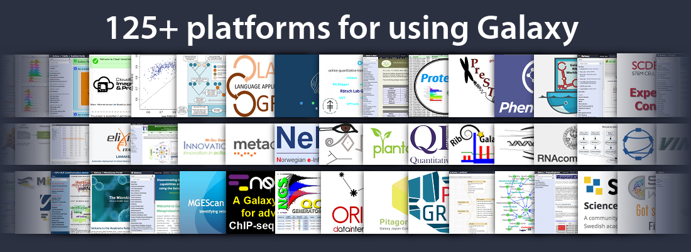

Galaxy from an administrator's point of view
Contributors
 Valentin Marcon
Valentin Marcon
 Nate Coraor
Nate Coraor
 Björn Grüning
Björn Grüning
 Helena Rasche
Helena Rasche
Questions
What options to deploy Galaxy do I have?
Which platforms are supported by Galaxy?
What requirements does Galaxy have?
Objectives
Learn about different options about Galaxy deployment.
Make an educated decision about your preferred deployment model.

Where can Galaxy run?
- Cloud (SaaS)
- A usegalaxy.* site Main Europe Australia
- Public Galaxy Servers
- Amazon EC2 or MS Azure
- Semi-private cloud (e.g.: NeCTAR, Jetstream)
- Private cloud (build your own Galaxy SaaS)
- Cloud (IaaS)
- Any cloud
- Scalable Local Server
- Dedicated or shared compute cluster(s)
- Cloud compute resources
- Standalone Local Server
Choosing where to run
| Supported | Main | Local | Cloud | Appliance |
|---|---|---|---|---|
| Your data sets are moderately sized | yes | yes | yes | yes |
| Your computation requirements are moderate | yes | yes | yes | yes |
| You want to share your Galaxy objects with others | yes | yes | yes | yes |
| All needed Tools are installed on Main | yes | ? | yes | yes |
| Your data sets are very large | no | ? | yes | yes |
| Your computation requirements are very large | no | ? | yes | yes |
| You have absolute data security requirements | no | yes | yes | yes |
| No network transfer of data | no | yes | no | yes |
Reasons to Install Your Own Galaxy
- You want to run a local production Galaxy
- You want to develop Galaxy tools
- You want to Develop Galaxy itself
- Install and use tools unavailable on public Galaxies
- Use sensitive data (e.g. clinical)
- Process large datasets that are too big for public Galaxies
- plug-in new datasources
Software Requirements
Required:
- Galaxy is written in Python and depends on Python 3.5 or newer
Minimal production requirements:
- PostgreSQL
- Reverse proxy server (NGINX, Apache)
Hardware Requirements
This depends:
- What do you intend to run?
- Where do you intend to run it?
If possible, run the Galaxy server separate from Galaxy jobs
Storage will usually be the biggest concern
Speaker Notes
- Depends on your available infrastructure
- If you are storage limited, can be addressed by policy of deleting old/unused histories
- If you are compute limited, can be addressed with queue limits
Server Hardware Requirements
Based on concurrent user count and assuming separate compute for jobs:
| Users | Resource estimate |
|---|---|
| 1 - 5 | 1 core, 1GB, 10 TB |
| 5 - 20 | 2 cores, 2 GB, 40 TB |
| 20 - 40 | 8 cores, 8 GB, 200 TB |
| 40+ | multiple hosts, 16 GB/host, 500 TB, dedicated DB host |
Storage is more difficult to estimate since it is, like compute, analysis and policy dependent
template: left-aligned
Galaxy Storage Philosophy
- Foster transparency and reproducibility
- Data is always created, never overwritten
- Copying history or library datasets associate them with the original file on disk without an actual copy
- By default, data is never really deleted unless explicitly instructed
- Even deleted data can be undeleted unless forcibly purged
template: left-aligned
Storage Requirements
An “average” 2018 NGS analysis (by Anton Nekrutenko): 66 GB
10 users, 10 histories: > 6 TB
Solutions:
- Quotas
- Set job limits in
job_conf.xml - Clean up deleted data (with a cron job)
- Forced removal based on age
- Users can configure their workflows to delete intermediate tool outputs
- Data libraries for common data
- Public servers: require email verification (and watch for duplicates)
- Plug in more/heterogeneous storage using Object Store configuration
Compute Requirements
This depends:
- What tools will your users be using?
- What are their requirements?
- In general, the most commonly used tools use a single core
- But can use lots of memory!
- Some compute-intensive tools use multiple cores
usegalaxy.org allocates from 8 GB/core to 16 GB/core
Connecting Galaxy to clusters/HPC is covered in the advanced section.
Making plans
Before deploying your first Galaxy server:
- Figure out where Galaxy will be stored
- Make sure it will be accessible to any eventual compute
- Figure out where data will be stored
- Make sure it will be accessible to any eventual compute
Galaxy deployment options
- As developer:
git clone https://github.com/galaxyproject/galaxy.git - Ready-to-use locally: Docker
- Production server: configuration management (e.g. Ansible)
In future:
- Alternative to git clone: Galaxy wheel in PyPI
Deployment Best Practices
- Use configuration management
- Whether you use configuration management or not, record every change you make on a version control system (e.g. git):
- Large, complex deployments grow organically
- If you don’t know what you did, you can’t do it again
template: left-aligned
System Administration Best Practices
- Take security seriously
- Update Galaxy when security updates are released
- Follow OS security best practices
- Privilege separate code/job/data ownership
- Write protect Galaxy and data if you can
- Read-only cluster mounts
Back up everything (except that which is managed by configuration management)
Key Points
- Galaxy is scalable from personal computers to huge HPC and cloud-instances.
- Amount of expected users, types of common tasks, and storage capabilities have a big impact on the deployment.
Thank you!
This material is the result of a collaborative work. Thanks to the Galaxy Training Network and all the contributors! This material is licensed under the Creative Commons Attribution 4.0 International License.
This material is licensed under the Creative Commons Attribution 4.0 International License.